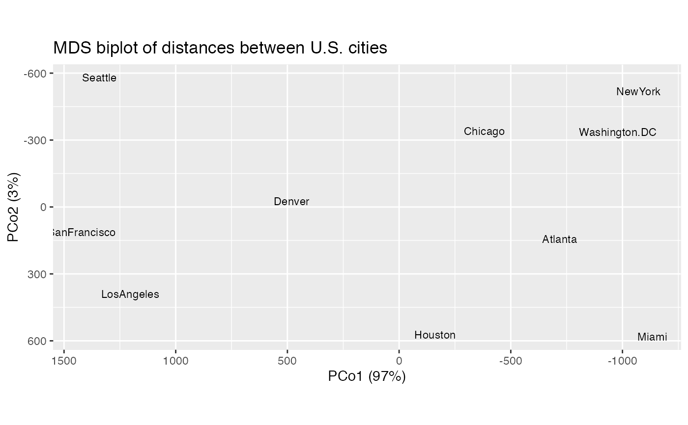

Functionality for classical multidimensional scaling objects
methods-cmds.RdThese methods extract data from, and attribute new data to,
objects of class "cmds_ord". This is a class introduced in this package
to identify objects returned by cmdscale_ord(), which wraps
stats::cmdscale().
# S3 method for cmds_ord as_tbl_ord(x) # S3 method for cmds_ord recover_rows(x) # S3 method for cmds_ord recover_cols(x) # S3 method for cmds_ord recover_inertia(x) # S3 method for cmds_ord recover_coord(x) # S3 method for cmds_ord recover_conference(x) # S3 method for cmds_ord augmentation_rows(x) # S3 method for cmds_ord augmentation_cols(x) # S3 method for cmds_ord augmentation_coord(x)
Arguments
| x | An ordination object. |
|---|
Examples
#> [1] "dist"#> Atlanta Chicago Denver Houston LosAngeles Miami NewYork #> Chicago 587 #> Denver 1212 920 #> Houston 701 940 879 #> LosAngeles 1936 1745 831 1374 #> Miami 604 1188 1726 968 2339 #> NewYork 748 713 1631 1420 2451 1092 #> SanFrancisco 2139 1858 949 1645 347 2594 2571 #> Seattle 2182 1737 1021 1891 959 2734 2408 #> Washington.DC 543 597 1494 1220 2300 923 205 #> SanFrancisco Seattle #> Chicago #> Denver #> Houston #> LosAngeles #> Miami #> NewYork #> SanFrancisco #> Seattle 678 #> Washington.DC 2442 2329# use multidimensional scaling to infer artificial planar coordinates UScitiesD %>% cmdscale_ord(k = 2) %>% as_tbl_ord() %>% print() -> usa_mds#> # A tbl_ord of class 'cmds_ord': (10 x 2) x (10 x 2)' #> # 2 coordinates: PCo1 and PCo2 #> # #> # Rows (symmetric): [ 10 x 2 | 0 ] #> PCo1 PCo2 | #> | #> 1 -719. 143. | #> 2 -382. -341. | #> 3 482. -25.3 | #> 4 -161. 573. | #> 5 1204. 390. | #> 6 -1134. 582. | #> 7 -1072. -519. | #> 8 1421. 113. | #> 9 1342. -580. | #> 10 -980. -335. | #> # #> # Columns (symmetric): [ 10 x 2 | 0 ] #> PCo1 PCo2 | #> | #> 1 -719. 143. | #> 2 -382. -341. | #> 3 482. -25.3 | #> 4 -161. 573. | #> 5 1204. 390. | #> 6 -1134. 582. | #> 7 -1072. -519. | #> 8 1421. 113. | #> 9 1342. -580. | #> 10 -980. -335. |#> # A tibble: 1 x 5 #> rank n.row n.col inertia class #> <int> <int> <int> <dbl> <chr> #> 1 2 10 2 9.47e13 cmds_ord#> PCo1 PCo2 #> [1,] -718.7594 142.99427 #> [2,] -382.0558 -340.83962 #> [3,] 481.6023 -25.28504 #> [4,] -161.4663 572.76991 #> [5,] 1203.7380 390.10029 #> [6,] -1133.5271 581.90731 #> [7,] -1072.2357 -519.02423 #> [8,] 1420.6033 112.58920 #> [9,] 1341.7225 -579.73928 #> [10,] -979.6220 -335.47281#> PCo1 PCo2 #> [1,] -718.7594 142.99427 #> [2,] -382.0558 -340.83962 #> [3,] 481.6023 -25.28504 #> [4,] -161.4663 572.76991 #> [5,] 1203.7380 390.10029 #> [6,] -1133.5271 581.90731 #> [7,] -1072.2357 -519.02423 #> [8,] 1420.6033 112.58920 #> [9,] 1341.7225 -579.73928 #> [10,] -979.6220 -335.47281#> # A tbl_ord of class 'cmds_ord': (10 x 2) x (10 x 2)' #> # 2 coordinates: PCo1 and PCo2 #> # #> # Rows (symmetric): [ 10 x 2 | 1 ] #> PCo1 PCo2 | .name #> | <chr> #> 1 -719. 143. | 1 Atlanta #> 2 -382. -341. | 2 Chicago #> 3 482. -25.3 | 3 Denver #> 4 -161. 573. | 4 Houston #> 5 1204. 390. | 5 LosAngeles #> 6 -1134. 582. | 6 Miami #> 7 -1072. -519. | 7 NewYork #> 8 1421. 113. | 8 SanFrancisco #> 9 1342. -580. | 9 Seattle #> 10 -980. -335. | 10 Washington.DC #> # #> # Columns (symmetric): [ 10 x 2 | 1 ] #> PCo1 PCo2 | .name #> | <chr> #> 1 -719. 143. | 1 Atlanta #> 2 -382. -341. | 2 Chicago #> 3 482. -25.3 | 3 Denver #> 4 -161. 573. | 4 Houston #> 5 1204. 390. | 5 LosAngeles #> 6 -1134. 582. | 6 Miami #> 7 -1072. -519. | 7 NewYork #> 8 1421. 113. | 8 SanFrancisco #> 9 1342. -580. | 9 Seattle #> 10 -980. -335. | 10 Washington.DC#> # A tibble: 2 x 4 #> .name .eig .inertia .prop_var #> <fct> <dbl> <dbl> <dbl> #> 1 PCo1 9582144. 9.18e13 0.970 #> 2 PCo2 1686820. 2.85e12 0.0301# fortification of artificial coordinates yields proportion of variance fortify(usa_mds, .matrix = "coord")#> # A tibble: 2 x 4 #> .name .eig .inertia .prop_var #> <fct> <dbl> <dbl> <dbl> #> 1 PCo1 9582144. 9.18e13 0.970 #> 2 PCo2 1686820. 2.85e12 0.0301# scree plot of inertia ggplot(usa_mds, .matrix = "coord", aes(x = .name, y = .inertia)) + theme_bw() + geom_col() + labs(x = "", y = "Inertia")# fortification automatically augments artificial coordinates fortify(usa_mds)#> # A tibble: 20 x 4 #> PCo1 PCo2 .name .matrix #> <dbl> <dbl> <chr> <chr> #> 1 -719. 143. Atlanta rows #> 2 -382. -341. Chicago rows #> 3 482. -25.3 Denver rows #> 4 -161. 573. Houston rows #> 5 1204. 390. LosAngeles rows #> 6 -1134. 582. Miami rows #> 7 -1072. -519. NewYork rows #> 8 1421. 113. SanFrancisco rows #> 9 1342. -580. Seattle rows #> 10 -980. -335. Washington.DC rows #> 11 -719. 143. Atlanta cols #> 12 -382. -341. Chicago cols #> 13 482. -25.3 Denver cols #> 14 -161. 573. Houston cols #> 15 1204. 390. LosAngeles cols #> 16 -1134. 582. Miami cols #> 17 -1072. -519. NewYork cols #> 18 1421. 113. SanFrancisco cols #> 19 1342. -580. Seattle cols #> 20 -980. -335. Washington.DC cols# reorient biplot to conventional compass usa_mds %>% ggbiplot() + scale_x_reverse() + scale_y_reverse() + geom_cols_text(aes(label = .name), size = 3) + ggtitle("MDS biplot of distances between U.S. cities")